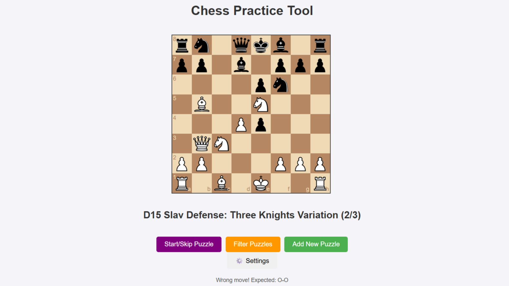

Tijdens mijn eerste jaar informatica ontwikkelde ik mijn allereerste project op eigen initiatief: een digitale versie van het gezelschapsspel MasterMind.
Het doel was de rol van de tweede speler te automatiseren, zodat het spel solo speelbaar werd.
Technologieën:
Java & JavaFX voor de implementatie en GUI
Leerpunten:
Eerste ervaring met het opzetten van een GUI in JavaFX
Begrip van spelregels vertalen naar logica en algoritmes
Toepassen van objectgeoriënteerd programmeren in een concrete use case
Rummikub
Voor het vak Software Development Project werkte ik samen met drie medestudenten aan een digitale versie van het spel Rummikub.
Het project vormde mijn eerste ervaring met een grootschaliger hogeschoolopdracht en het toepassen van architecturale lagen in softwareontwikkeling.
Technologieën & Architectuur:
Java & JavaFX voor spelimplementatie en GUI
Toepassing van een 4-lagen model: UI, domein, repository en data
Leerpunten:
Eerste ervaring met het werken in teamverband aan een groter softwareproject
Inzicht verworven in meerlagige software-architectuur
Praktische toepassing van JavaFX in een interactieve game-omgeving
Teamleden: Siebe Van Campenhout, Robin Vermeir en Shane Minnebo
Training manager
Mijn eerste web development project (schoolopdracht) waarin ik een digitaal platform bouwde voor trainers om trainingen te beheren en opstellingen bij te houden.
Technologieën:
Frontend: React
Backend: Node.js (REST API met Koa)
Database: MySQL
Authenticatie & validatie in zowel frontend als backend
Wachtwoord hashing voor veilige login
Functionaliteiten:
Trainers konden trainingen aanmaken, bijhouden en delen
Leden konden enkel het overzicht bekijken
Rolgebaseerde toegangscontrole (trainers vs. gewone leden)
Leerpunten:
Eerste ervaring met full-stack web development
Praktische toepassing van een REST API in Node.js
Basis gelegd voor het latere digitalisatieproject van mijn badmintonclub (zie DBC project)
Duurzaamheid KMO's
Uitgeroepen tot beste project van onze richting door de opdrachtgever.
Voor het vak Data Engineering Project I ontwikkelden we een end-to-end oplossing om duurzaamheidsscores toe te kennen aan ~80.000 Vlaamse kmo’s.
Alle relevante informatie werd verzameld via web scraping en automatisch geanalyseerd.
Technologieën & Aanpak:
Python voor web scraping van websites en jaarverslagen
Data cleaning & opslag in een SQL database
Backend: beveiligde API server in Node.js
Frontend: beveiligde React website voor visualisatie
Leerpunten:
Automatisch verzamelen, analyseren en structureren van grote datasets (~80k records)
Hands-on ervaring met data pipelines en databasebeheer
Ervaring opgedaan met API-ontwikkeling en frontend-visualisatie
Teamleden: Siebe Van Campenhout, Benjamin Daems, Guylian Weverbergh en Tanguy Montaine
Data Engineering Project II – Machine Learning: Vervolg op het voorgaande project, met de focus op het toepassen van machine learning-technieken om de duurzaamheidsscores verder te verfijnen en analyseren.
Leerpunten:
Modelleren en trainen van een neuraal netwerk
Samenwerken in een team aan een klantgerichte oplossing
Opzetten van een data-pijplijn en ETL-processen
Data-analyse en visualisatie
Op eigen initiatief ontwikkelde ik een digitaal platform dat de administratie, ledenbeheer en communicatie van badmintonclubs volledig digitaliseert.
Het platform biedt functionaliteiten zoals ledenbeheer, inschrijvingen, betalingen, trainingsplanning en e-mailcommunicatie.
Door deze oplossing werd de administratieve last voor clubs aanzienlijk verminderd.
Leerpunten:
Ontwikkelen van een full-stack webapplicatie van concept tot deployment
Opzetten van CI/CD pipelines en automatische deployment
Rollen- en rechtenbeheer binnen een applicatie
API-gedreven e-mailsystemen
Vertalen van gebruikersbehoeften naar technische oplossingen
Chess Opening trainer

Een zelfontwikkelde webapplicatie om schaakopeningen en middenspelen systematisch te oefenen. Gebruikers kunnen openingen opnemen en benoemen, en vervolgens trainen via een dynamische puzzelcyclus.
Het platform biedt uitgebreide filteropties (o.a. openingscode, naam, kleur, middlegames, archived, faults-made) en houdt tijdens het oplossen fouten bij.
In de faults-made only-modus blijven fout beantwoorde puzzels in de cyclus totdat ze correct zijn opgelost, waardoor de training adaptief en doelgericht wordt.
Met de archive-functie kunnen beheersbare puzzelsets worden samengesteld zodat de focus ligt op leerpunten.
Technologieën:
Frontend: Vanilla JavaScript met chess.js en chessboard.js
Backend: Node.js (lightweight server)
Dataopslag: JSON-bestanden
Leerpunten:
Ontwerpen van een adaptieve trainingscyclus met foutopvolging en filtering
Opzetten van een custom data-opslagstructuur zonder database
Vertalen van persoonlijke use cases naar een schaalbare technische oplossing
Ervaring in het bouwen van een gebruiksvriendelijke applicatie die praktische waarde toevoegt